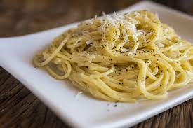

Cacio e Pepe

Source
This is another of the traditional pasta dishes
Ingredients
- 1 Lb Spaghetti
- 1 1/2 - 2 Cups of Pecorino Romano Cheese, Finely Grated, not shredded
- 1 Tablespoon Whole Tellicherry Black Peppercorns, Toasted
- Salted Pasta Water
Directions
- Toast whole Peppercorns for about 3 minutes or until fragrant.
Then empty your pepper mill and add the toasted peppercorns to it.
Then grate coarse peppercorns into a pan without any heat on it.
- Salt pasta water and get it boiling. Then add the pasta to it and give it a good mix. Let it cook about half way, then add a ladle or two of the pasta water to the pan with the black pepper. Put on the heat to high and start to reduce that starchy water.
- Then take a bowl of your pecorino cheese and add a ladle or two of the pasta water and mix it very well to create a cheese paste. Set that aside.
- Once the pasta is about a minute or two away from being al dente, transfer the pasta from the water to the pan. Add some more pasta water if needed and finish cooking it in the pan until it is al dente. Add pasta water as needed.
- Once the pasta is al dente and cooked to your liking, turn off the heat and mix in the cheesy paste. Mix and stir or toss it in the pan. The idea is to emulsify the cheese and the pasta water to form a creamy sauce that clings to the pasta. Once the sauce has come together, plate it immediately.
- Plate a nice mound of it, a little extra sauce and finish with a little more fresh cracked black pepper. It’s just 4 ingredients, but it comes together into something quite amazing.